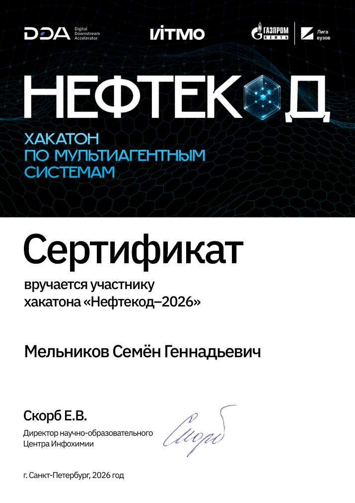

<!doctype html>
<html lang="ru">
<head>
  <meta charset="utf-8"><meta name="viewport" content="width=device-width, initial-scale=1">
  <meta name="theme-color" content="#f4f1e9"><meta name="description" content="Подробно о проекте Семёна Мельникова.">
  <title>Проект — Семён Мельников</title>
  <link rel="icon" type="image/svg+xml" href="favicon.svg">
  <link rel="preconnect" href="https://fonts.googleapis.com"><link rel="preconnect" href="https://fonts.gstatic.com" crossorigin>
  <link href="https://fonts.googleapis.com/css2?family=DM+Mono:wght@400;500&family=Manrope:wght@400;500;600;700;800&display=swap" rel="stylesheet">
  <style>
    :root{--paper:#f4f1e9;--ink:#171915;--muted:#77796f;--line:#d9d6cc;--accent:#ff593a;--wash:#f7dfd2;--sans:'Manrope',Arial,sans-serif;--mono:'DM Mono',monospace}*{box-sizing:border-box}html{scroll-behavior:smooth}body{margin:0;background:var(--paper);color:var(--ink);font-family:var(--sans)}a{color:inherit;text-decoration:none}.wrap{width:min(1280px,88vw);margin:auto}.mono,.eyebrow,.nav,.kicker,.caption,.index,.tag,.footer{font-family:var(--mono);text-transform:uppercase;letter-spacing:.08em;font-size:10px}.top{height:72px;border-bottom:1px solid var(--line);display:flex;align-items:center;justify-content:space-between}.brand{font-weight:800;letter-spacing:-.04em;font-size:14px}.brand i{color:var(--accent);font-style:normal}.nav{display:flex;gap:26px;color:#66675f}.nav a:hover,.back:hover{color:var(--accent)}.hero{padding:42px 0 82px}.back{display:inline-flex;gap:10px;align-items:center;color:#686a61;font:10px var(--mono);text-transform:uppercase;letter-spacing:.08em}.back b{font-size:16px;font-weight:400}.eyebrow{display:flex;align-items:center;gap:11px;color:var(--muted);margin-top:62px}.eyebrow:before{content:'';width:25px;height:1px;background:var(--accent)}h1{font-size:clamp(62px,11vw,150px);line-height:.84;letter-spacing:-.1em;margin:27px 0 25px;max-width:1060px}.subtitle{font-size:clamp(17px,2vw,23px);line-height:1.5;color:#62645c;max-width:710px}.meta{display:flex;gap:9px;flex-wrap:wrap;margin-top:29px}.tag{font-size:9px;border:1px solid var(--line);border-radius:99px;padding:8px 11px;color:#595b53}.hero-visual{height:clamp(280px,51vw,590px);background:var(--wash);margin-top:55px;position:relative;overflow:hidden;display:grid;place-items:center}.hero-visual img{width:100%;height:100%;object-fit:cover;display:block}.hero-visual.has-image{background:#ece8de}.visual-note{position:absolute;left:22px;bottom:18px;padding:9px 12px;background:var(--paper);font:9px var(--mono);text-transform:uppercase;letter-spacing:.06em}.orb{width:min(34vw,355px);aspect-ratio:1;border-radius:50%;background:radial-gradient(circle at 32% 28%,#fff3bd,#f6aa6d 25%,var(--accent) 48%,#413359 85%);box-shadow:inset -30px -35px 60px #2119396b,0 40px 90px #10101c20;animation:drift 7s ease-in-out infinite;position:relative}.orb:after{content:'';position:absolute;inset:-28% -18%;border:1px solid #1516159c;border-radius:50%;transform:rotate(-28deg) scaleY(.34)}@keyframes drift{50%{transform:translateY(-10px) rotate(6deg)}}.case-body{display:grid;grid-template-columns:.62fr 1.38fr;gap:8%;padding:18px 0 100px}.aside{position:sticky;top:28px;align-self:start;border-top:1px solid var(--line);padding-top:17px}.aside-label{font:9px var(--mono);text-transform:uppercase;letter-spacing:.1em;color:var(--muted)}.aside-title{font-size:22px;font-weight:700;line-height:1.15;letter-spacing:-.055em;margin:14px 0}.aside p{font-size:12px;line-height:1.8;color:var(--muted)}.aside-link{display:inline-block;border-bottom:1px solid var(--accent);padding:6px 0;font-size:11px;margin-top:8px}.story h2{font-size:clamp(32px,4vw,54px);line-height:.98;letter-spacing:-.075em;margin:0 0 22px}.story p{font-size:15px;line-height:1.85;color:#60625b;max-width:760px}.story p strong{color:var(--ink);font-weight:700}.story-section{padding:0 0 62px}.story-section+.story-section{border-top:1px solid var(--line);padding-top:48px}.steps{display:grid;grid-template-columns:repeat(3,1fr);gap:10px;margin-top:26px}.step{min-height:147px;background:#ebe8df;padding:17px;display:flex;flex-direction:column;justify-content:space-between}.step:nth-child(2){background:var(--wash)}.step:nth-child(3){background:#e3edcb}.step small{font:9px var(--mono);color:#73756d}.step strong{font-size:15px;line-height:1.25;letter-spacing:-.04em}.image-block{margin:30px 0 0;background:#e8e5dc;padding:12px}.image-block img{width:100%;height:auto;display:block}.caption{font-size:9px;color:var(--muted);padding:12px 4px 3px}.feature-grid{display:grid;grid-template-columns:repeat(2,1fr);gap:10px;margin-top:25px}.feature{border-top:2px solid var(--accent);background:#ebe8df;padding:16px 17px 19px}.feature b{font-size:14px;letter-spacing:-.03em}.feature p{font-size:11px;line-height:1.65;margin:9px 0 0}.flow{display:flex;align-items:stretch;gap:7px;margin-top:26px}.flow span{flex:1;background:#e9e6dc;padding:14px 10px;font-size:11px;line-height:1.45}.flow span+span{position:relative}.flow span+span:before{content:'→';position:absolute;left:-9px;top:50%;transform:translate(-50%,-50%);color:var(--accent);font-size:16px}.visual-grid{display:grid;grid-template-columns:1.15fr .85fr;gap:12px;margin-top:28px}.visual-tile{min-height:220px;background:#e8e5dc;padding:19px;position:relative;overflow:hidden}.visual-tile strong{font-size:17px;letter-spacing:-.05em;position:relative;z-index:1}.visual-tile .mini-lines{display:grid;gap:9px;margin-top:26px;max-width:280px}.mini-lines i{display:block;height:9px;border-radius:9px;background:#d3d2c8}.mini-lines i:nth-child(2){width:70%;background:var(--accent)}.mini-lines i:nth-child(3){width:85%}.bars{display:flex;align-items:end;gap:9px;height:125px;margin-top:12px}.bars i{flex:1;background:var(--accent);border-radius:8px 8px 0 0;height:40%}.bars i:nth-child(2){height:74%;background:#88a958}.bars i:nth-child(3){height:55%;background:#f0aa76}.bars i:nth-child(4){height:92%;background:#9c8acc}.media-links{display:flex;gap:12px;flex-wrap:wrap;margin-top:26px}.button{display:inline-flex;align-items:center;gap:15px;background:var(--ink);color:white;padding:14px 18px;font-size:11px;border-radius:99px;transition:.2s}.button:hover{background:var(--accent);transform:translateY(-2px)}.button.secondary{background:transparent;color:var(--ink);border:1px solid var(--line)}.button.secondary:hover{border-color:var(--accent);color:var(--accent)}.not-found{min-height:70vh;display:grid;place-items:center;text-align:center}.not-found h1{font-size:60px}.footer{border-top:1px solid var(--line);padding:20px 0;color:var(--muted);display:flex;justify-content:space-between}.footer a:hover{color:var(--accent)}
    @media(max-width:720px){.wrap{width:calc(100% - 40px)}.top{height:61px}.nav{gap:15px;font-size:8px}.hero{padding-top:28px;padding-bottom:55px}.eyebrow{margin-top:42px}.hero-visual{margin-top:35px;height:300px}.case-body{grid-template-columns:1fr;gap:38px;padding-bottom:60px}.aside{position:static;order:2}.story-section{padding-bottom:43px}.story-section+.story-section{padding-top:37px}.steps{grid-template-columns:1fr}.step{min-height:105px}.flow{flex-direction:column}.flow span+span:before{content:'↓';left:50%;top:-9px}.feature-grid{grid-template-columns:1fr}.visual-grid{grid-template-columns:1fr}.visual-tile{min-height:160px}.orb{width:62vw}.footer{font-size:8px;gap:10px}.hero h1{font-size:clamp(59px,16vw,95px)}}@media(prefers-reduced-motion:reduce){*,*:before,*:after{animation-duration:.01ms!important;scroll-behavior:auto!important;transition-duration:.01ms!important}}
    .video-block{margin:30px 0 0;background:#121923;padding:10px}.video-block video{display:block;width:100%;max-height:680px;background:#101722}.video-block figcaption{color:#c4cbd5;font:9px var(--mono);letter-spacing:.06em;text-transform:uppercase;padding:11px 4px 2px}.case-gallery{display:grid;grid-template-columns:1fr 1fr;gap:14px;margin-top:26px}.case-shot{margin:0;background:#e9e6dd;padding:9px}.case-shot img{width:100%;height:auto;display:block;background:#dedbd2}.case-shot figcaption{padding:10px 4px 3px;color:var(--muted);font:9px/1.6 var(--mono);text-transform:uppercase;letter-spacing:.04em}.gallery-note{margin-top:14px;color:var(--muted);font:9px/1.7 var(--mono);text-transform:uppercase;letter-spacing:.05em}.storyboard{display:grid;grid-template-columns:repeat(3,1fr);gap:10px;margin-top:28px}.storyboard article{min-height:205px;background:var(--wash);padding:18px;display:flex;flex-direction:column;justify-content:space-between;position:relative;overflow:hidden}.storyboard article:nth-child(2){background:#e4edcf}.storyboard article:nth-child(3){background:#e4e8f7}.storyboard small{font:9px var(--mono);letter-spacing:.08em}.storyboard strong{font-size:clamp(18px,2.2vw,28px);line-height:1.02;letter-spacing:-.065em;max-width:210px}.storyboard i{position:absolute;right:-20px;top:36px;width:100px;height:100px;border:1px solid #1719154c;border-radius:50%;box-shadow:0 0 0 12px transparent,0 0 0 13px #1719152d}.storyboard article:last-child i{transform:scale(.7) rotate(35deg);border-radius:31%}
    @media(max-width:720px){.case-gallery,.storyboard{grid-template-columns:1fr}.storyboard article{min-height:145px}}
    .certificate{display:grid;grid-template-columns:minmax(180px,280px) 1fr;gap:25px;align-items:center;margin-top:25px;padding:18px;background:#ebe8df}.certificate img{display:block;width:100%;height:auto}.certificate h3{font-size:23px;letter-spacing:-.05em;margin:0 0 12px}.certificate p{margin:0 0 20px}@media(max-width:720px){.certificate{grid-template-columns:1fr}.certificate img{max-width:280px}}
  </style>
</head>
<body>
  <div id="app"></div>
  <script>
    const cases={
      clientix:{number:'01',type:'\u0422\u0435\u043b\u0435\u0433\u0440\u0430\u043c-\u0431\u043e\u0442 \u00b7 AI-\u0430\u0441\u0441\u0438\u0441\u0442\u0435\u043d\u0442',title:'Clientix',subtitle:'AI-ассистент, который помогает малому бизнесу не терять обращения и держать контакт с клиентом.',color:'#3768e8',wash:'#dce7ff',tags:['Python','Telegram','AI-ассистент','FastAPI'],summary:'Clientix автоматизирует первую линию общения: отвечает на типовые вопросы, собирает заявки и оставляет владельцу понятную картину по обращениям.',problem:'Когда сообщения приходят в разное время, ручная обработка замедляет ответ и часть заявок может потеряться. Задача Clientix — собрать этот поток в одном понятном сценарии и оставить человеку контроль над сложными диалогами.',steps:[['01','Вопрос клиента'],['02','Ответ и сбор заявки'],['03','Оператор подключается при необходимости']],features:[['Ответы на вопросы','AI-ассистент использует сведения о бизнесе, чтобы помогать с типовыми вопросами.'],['Сбор лидов','Контакт и суть обращения сохраняются как заявка.'],['Передача оператору','Сценарий предусматривает переключение на человека.'],['Контроль и аналитика','Есть уведомления о новых заявках, история и экспорт лидов.']],image:'portfolio-assets/clientix-ui.jpg',video:'portfolio-assets/clientix-demo.mp4',screenshots:[['portfolio-assets/clientix-telegram-demo.jpg','\u0414\u0435\u043c\u043e-\u0441\u0446\u0435\u043d\u0430 \u00b7 \u0432\u0438\u0437\u0443\u0430\u043b\u0438\u0437\u0430\u0446\u0438\u044f Telegram-\u0434\u0438\u0430\u043b\u043e\u0433\u0430']],caption:'Кадр из демо-ролика: обзор панели и список заявок на демонстрационных данных.'},
      neftecode:{number:'02',type:'Industrial tech · Цифровое производство',title:'Нефтекод',subtitle:'Операторский центр для поддержки решений на производстве: данные, кандидаты режимов и объяснимые рекомендации в одном контуре.',color:'#c3e66a',wash:'#e3edcb',tags:['Python','FastAPI','React','Мультиагентная система'],summary:'Прототип цифрового производственного контура для цепочки АВТ → гидроочистка 24-2000 → блендинг. Система помогает оператору оценивать состояние установки и сопоставлять возможные действия с ограничениями.',problem:'На производстве важно не только предложить действие, но и подтвердить свежесть исходных данных и не выдавать рекомендацию, которая нарушает технологические ограничения.',steps:[['01','Срез состояния и проверка свежести данных'],['02','Агенты предлагают варианты'],['03','Ограничения, ранжирование и объяснение']],features:[['Актуальность данных','Проверяется свежесть входных сигналов ЛИМС/ПАК.'],['Защита ограничениями','Кандидаты проходят жёсткий фильтр до ранжирования.'],['Честный результат','Система может рекомендовать удерживать режим или отказаться от совета.'],['Объяснение для оператора','Языковая модель объясняет результат, но не принимает производственное решение.']],image:'portfolio-assets/neftecode-console.png',screenshots:[['portfolio-assets/neftecode-console.png','Пульт оператора: сводка режима и объяснение выбранной рекомендации.'],['portfolio-assets/neftecode-decision.png','Решение по шагам: путь от проверки данных до результата.'],['portfolio-assets/neftecode-agents.png','Роли агентов и этапы переговоров Contract Net.'],['portfolio-assets/neftecode-sandbox.png','Песочница what-if для проверки гипотез на модели.']],caption:'Скриншоты локального интерфейса в браузерном demo-режиме.'},
      spaces:{number:'03',type:'Creative code · 3D в браузере',title:'Spaces / 3D',subtitle:'Интерактивное цифровое пространство, в котором светящийся объект и абстрактный ландшафт реагируют на движение и взгляд.',color:'#f1784f',wash:'#f7e2d5',tags:['Three.js','WebGL','OrbitControls','Постобработка'],summary:'Эксперимент с 3D-сценой в браузере: центральный объект парит над процедурной средой, а камера и свет создают ощущение пространства, а не плоской иллюстрации.',problem:'Задача — превратить техническую 3D-сцену в короткое, понятное визуальное впечатление: дать зрителю объект, глубину и свободу взаимодействия.',steps:[['01','Войти в сцену'],['02','Осмотреть объект и ландшафт'],['03','Взаимодействовать с камерой']],features:[['Автодвижение','Сцена остаётся живой без действий пользователя.'],['Управление камерой','Поворот и перспектива реагируют на ввод.'],['Свет и глубина','Bloom и градиентная среда собирают атмосферу.'],['Адаптация','Размер сцены подстраивается под окно браузера.']],image:'portfolio-assets/spaces-scene.png',caption:'Скриншот интерактивной 3D-сцены в браузере.'},
      refract:{number:'04',type:'Дизайн-концепт · Генеративная графика',title:'RE:FRACT',subtitle:'Визуальная лаборатория, где цифровая айдентика ощущается как материал: стекло, свет, ботаника и преломление.',color:'#1646ff',wash:'#e1e5ff',tags:['Creative direction','HTML / CSS','Canvas','Motion'],summary:'RE:FRACT — авторский концепт генеративной дизайн-студии. Его визуальный язык построен вокруг оптического опыта: изображение, типографика и движение воспринимаются как части одного материала.',problem:'Хотелось показать, как сайт может сразу объяснить собственный характер — не через перечень услуг, а через убедительный визуальный опыт.',steps:[['01','Увидеть материю'],['02','Исследовать образец'],['03','Войти в интерактивное поле']],features:[['Тактильная оптика','Стеклянные формы, ботанические фактуры и направленный свет.'],['Редакционная сетка','Крупная типографика контрастирует с точными подписями.'],['Реакция на пользователя','Движение и прокрутка связывают элементы в цельное впечатление.'],['Честный статус','Это дизайн-концепт, не клиентский кейс.']],image:'portfolio-assets/refract-desktop.png',caption:'Скриншот собранной desktop-версии RE:FRACT.'},
      marshrut:{number:'05',type:'Веб-приложение · Личное пространство',title:'Маршрут',subtitle:'Планировщик, который помогает собрать дела, обучение и фокус-сессии в одну спокойную систему.',color:'#8b72ce',wash:'#ece6fb',tags:['React','TypeScript','Vite','Локальные данные'],summary:'Маршрут — responsive-прототип личного рабочего пространства. Он объединяет задачи по направлениям, учебный трек, заметки и таймер фокус-сессий.',problem:'Когда планы, заметки и обучение живут отдельно, трудно увидеть ближайший следующий шаг. Приложение помогает свести это в один личный маршрут.',steps:[['01','Выбрать направление и задачу'],['02','Запланировать время и сфокусироваться'],['03','Отметить результат и увидеть историю']],features:[['План и обзор','Задачи сгруппированы по направлениям, сроки и оценка времени остаются видимыми.'],['Учебный трек','Python-уроки связаны с практикой и этапами маршрута.'],['Фокус-таймер','Сессии на 25, 50 или 75 минут сохраняют фактическое время.'],['Журнал и заметки','Выполненное можно отменить или вернуть, история сохраняет изменения.']],image:'portfolio-assets/marshrut-dashboard.png',screenshots:[['portfolio-assets/marshrut-plan.png','\u042d\u043a\u0440\u0430\u043d \u0437\u0430\u0434\u0430\u0447 \u00b7 \u0434\u0435\u043c\u043e-\u0434\u0430\u043d\u043d\u044b\u0435'],['portfolio-assets/marshrut-python.png','\u0423\u0447\u0435\u0431\u043d\u044b\u0439 \u043c\u0430\u0440\u0448\u0440\u0443\u0442 Python \u00b7 12 \u044d\u0442\u0430\u043f\u043e\u0432']],caption:'\u0413\u043b\u0430\u0432\u043d\u044b\u0439 \u044d\u043a\u0440\u0430\u043d: \u0431\u043b\u0438\u0436\u0430\u0439\u0448\u0430\u044f \u0437\u0430\u0434\u0430\u0447\u0430, \u0444\u043e\u043a\u0443\u0441 \u0438 \u043e\u0431\u0437\u043e\u0440 \u043d\u0430\u043f\u0440\u0430\u0432\u043b\u0435\u043d\u0438\u0439 \u043d\u0430 \u0434\u0435\u043c\u043e-\u0434\u0430\u043d\u043d\u044b\u0445.',links:[]},
      gym:{number:'06',type:'Telegram-бот · Тренировки и питание',title:'Набор массы',subtitle:'Личный бот для тренировок, питания и отслеживания прогресса — прямо в Telegram.',color:'#69a46b',wash:'#e4efdd',tags:['Python','aiogram 3','SQLite','Telegram'],summary:'Бот объединяет в одном диалоге ключевые вещи для тренировочного процесса: питание, вес, занятия и напоминания.',problem:'Когда данные о тренировках и самочувствии не записываются, сложнее заметить последовательность и держать план. Бот упрощает регулярные отметки.',steps:[['01','Записать тренировку и вес'],['02','Свериться с планом питания'],['03','Вернуться к своей истории']],features:[['Тренировочный журнал','Помогает держать упражнения и тренировки под рукой.'],['Питание','Материалы и ориентиры по питанию доступны в диалоге.'],['Вес и динамика','Отметки веса сохраняются для наблюдения за изменениями.'],['Напоминания','Бот помогает не терять регулярность между сессиями.']],caption:'Путь пользователя: запись → история → последовательность.'},
      vozrozhdenie:{number:'07',type:'Telegram-продукт · Программа сопровождения',title:'Возрождение',subtitle:'Последовательный бот-сценарий: от короткой диагностики и персонального материала к программе и сопровождению.',color:'#de795b',wash:'#f7e3d9',tags:['Python','aiogram 3','SQLite','Платёжный сценарий'],summary:'Бот ведёт человека через этапы: диагностика, персональный результат, небольшие практические шаги, повторные касания и программа с выдачей материалов по расписанию.',problem:'Сценарий должен оставаться понятным на длинной дистанции: пользователь видит следующий шаг и возвращается к программе в нужный момент, а автор управляет материалами и расписанием.',steps:[['01','Диагностика и личный результат'],['02','Практика и поддерживающие касания'],['03','Программа, расписание и сопровождение']],features:[['Персональный вход','Диагностика собирает ответы и формирует индивидуальную точку старта.'],['Постепенная выдача','Материалы программы появляются по расписанию и этапам.'],['Повторные касания','Планировщик возвращает пользователя к следующему шагу.'],['Администрирование','Есть инструменты управления контентом и статусом сценария.']],caption:'Архитектура пользовательского пути собрана из этапов и расписания.',links:[]}
    };
    const id=new URLSearchParams(location.search).get('id'),p=cases[id],app=document.querySelector('#app');
    const esc=s=>String(s).replace(/[&<>"']/g,c=>({'&':'&amp;','<':'&lt;','>':'&gt;','"':'&quot;',"'":'&#39;'}[c]));
    if(!p){app.innerHTML='<main class="not-found"><div><div class="eyebrow">Кейс не найден</div><h1>Такого проекта<br>здесь нет.</h1><a class="button" href="portfolio.html#work">Вернуться в портфолио ↗</a></div></main>'}else{
      document.title=`${p.title} — Семён Мельников`;document.querySelector('meta[name="description"]').content=p.subtitle;document.documentElement.style.setProperty('--accent',p.color);document.documentElement.style.setProperty('--wash',p.wash);
      const image=p.image?`<div class="hero-visual has-image"><span class="visual-note">${esc(p.caption)}</span></div>`:`<div class="hero-visual"><div class="orb"></div><span class="visual-note">${esc(p.caption)}</span></div>`;
      const featureHtml=p.features.map(f=>`<div class="feature"><b>${esc(f[0])}</b><p>${esc(f[1])}</p></div>`).join('');const stepHtml=p.steps.map(s=>`<div class="step"><small>${esc(s[0])}</small><strong>${esc(s[1])}</strong></div>`).join('');
      app.innerHTML=`<div class="wrap"><header class="top"><a class="brand" href="portfolio.html">SEMYON<i>—</i>DEV</a><nav class="nav"><a href="portfolio.html#work">Проекты</a><a href="portfolio.html#about">Обо мне</a><a href="portfolio.html#contact">Контакт</a></nav></header><main><section class="hero"><a class="back" href="portfolio.html#work"><b>←</b> Все проекты</a><div class="eyebrow">${esc(p.type)} · КЕЙС ${esc(p.number)}</div><h1>${esc(p.title)}</h1><p class="subtitle">${esc(p.subtitle)}</p><div class="meta">${p.tags.map(t=>`<span class="tag">${esc(t)}</span>`).join('')}</div>${image}</section><div class="case-body"><aside class="aside"><div class="aside-label">Семён Мельников · ${esc(p.number)} / 07</div><div class="aside-title">От идеи<br>до работающего<br>сценария.</div><p>${esc(p.type)}<br>${p.tags.map(esc).join(' · ')}</p><a class="aside-link" href="portfolio.html#work">← Другие проекты</a></aside><article class="story"><section class="story-section"><div class="kicker">01 / Контекст</div><h2>Что это<br>за проект?</h2><p>${esc(p.summary)}</p><p>${esc(p.problem)}</p><div class="steps">${stepHtml}</div></section><section class="story-section"><div class="kicker">02 / Как устроено</div><h2>Продуманная<br>логика. Живой опыт.</h2><div class="feature-grid">${featureHtml}</div></section><section class="story-section"><div class="kicker">03 / Визуальная часть</div><h2>Посмотреть ближе.</h2>${p.image?`<figure class="image-block"><figcaption class="caption">${esc(p.caption)}</figcaption></figure>`:`<div class="visual-grid"><div class="visual-tile"><strong>${esc(p.steps[0][1])}</strong><div class="mini-lines"><i></i><i></i><i></i></div></div><div class="visual-tile"><strong>${esc(p.steps[2][1])}</strong><div class="bars"><i></i><i></i><i></i><i></i></div></div></div><div class="caption">Схема сценария проекта · иллюстративная визуализация, не скриншот интерфейса.</div>`}<div class="media-links"><a class="button secondary" href="portfolio.html#contact">Обсудить похожий проект ↗</a></div></section></article></div></main><footer class="footer"><span>© Семён Мельников · 2026</span><a href="portfolio.html#top">В портфолио ↑</a></footer></div>`;
    }
  </script>
  <script>
    const activeCase=cases[id],mediaSection=document.querySelector('.story-section:last-child');if(activeCase?.video){const figure=document.createElement('figure');figure.className='video-block';figure.innerHTML=`<video controls playsinline preload="metadata" poster="${activeCase.image}"><source src="${activeCase.video}" type="video/mp4">Ваш браузер не поддерживает видео.</video><figcaption>Демо Clientix · переписка, уведомление и панель на демонстрационных данных.</figcaption>`;mediaSection.querySelector('.image-block')?.replaceWith(figure)}if(activeCase?.screenshots){const gallery=document.createElement('div');gallery.className='case-gallery';gallery.innerHTML=activeCase.screenshots.map(([src,label])=>`<figure class="case-shot"><figcaption>${label}</figcaption></figure>`).join('');mediaSection.querySelector('.image-block')?.remove();mediaSection.querySelector('.caption')?.remove();mediaSection.querySelector('h2').after(gallery);const note=document.createElement('p');note.className='gallery-note';note.textContent=activeCase.caption;gallery.after(note)}if(activeCase&&!activeCase.image){const grid=mediaSection.querySelector('.visual-grid');if(grid){const storyboard=document.createElement('div');storyboard.className='storyboard';storyboard.innerHTML=activeCase.steps.map(s=>`<article><small>${s[0]} / ПРОЦЕСС</small><strong>${s[1]}</strong><i aria-hidden="true"></i></article>`).join('');grid.replaceWith(storyboard);const note=mediaSection.querySelector('.caption');if(note)note.textContent='Схема сценария · не скриншот интерфейса.'}}
  </script>
  <script>
    if(id==='neftecode'){
      const section=document.createElement('section');
      section.className='story-section';
      section.innerHTML='<div class="kicker">04 / Подтверждение участия</div><h2>Нефтекод–2026.</h2><div class="certificate"><a href="portfolio-assets/neftecode-2026-certificate.pdf" target="_blank" rel="noreferrer" aria-label="Открыть сертификат участника Нефтекод–2026"></a><div><h3>Сертификат участника</h3><p>Участие в хакатоне по мультиагентным системам «Нефтекод–2026». Документ подтверждает участие, а не призовое место.</p><a class="button secondary" href="portfolio-assets/neftecode-2026-certificate.pdf" target="_blank" rel="noreferrer">Открыть оригинал PDF ↗</a></div></div>';
      document.querySelector('.story').append(section);
    }
  </script>
</body>
</html>
